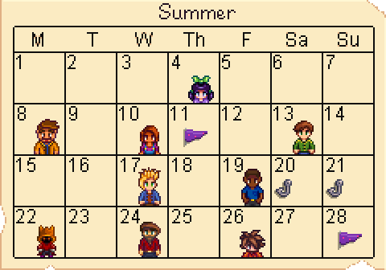
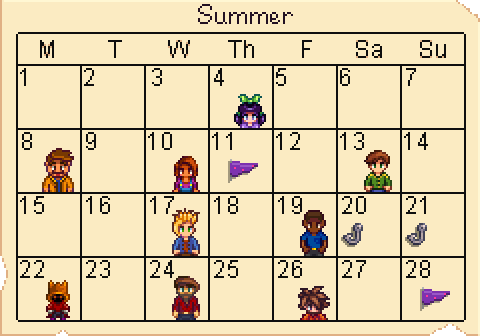

Festivals
| Day | Icon | Name |
|---|---|---|
| 11 |

|
Luau |
| 20-21 | Trout Derby | |
| 28 |
|
Dance of the Moonlight Jellies |
Single Harvest
| Crop | Days to Grow |
Max Harvests
per Season |
|---|---|---|
| Melon | 12 days | 2 |
| Poppy | 7 days | 3 |
| Radish | 6 days | 4 |
Forage
| Image | Name | Found |
|---|---|---|
| Common Mushroom |
|
|
| Fiddlehead Fern |
|
|
| Grape |
|
Fish
| Image | Name | Location |
|---|---|---|
| Pufferfish |
|
|

|
Tuna |
|
| Rainbow Trout |
|